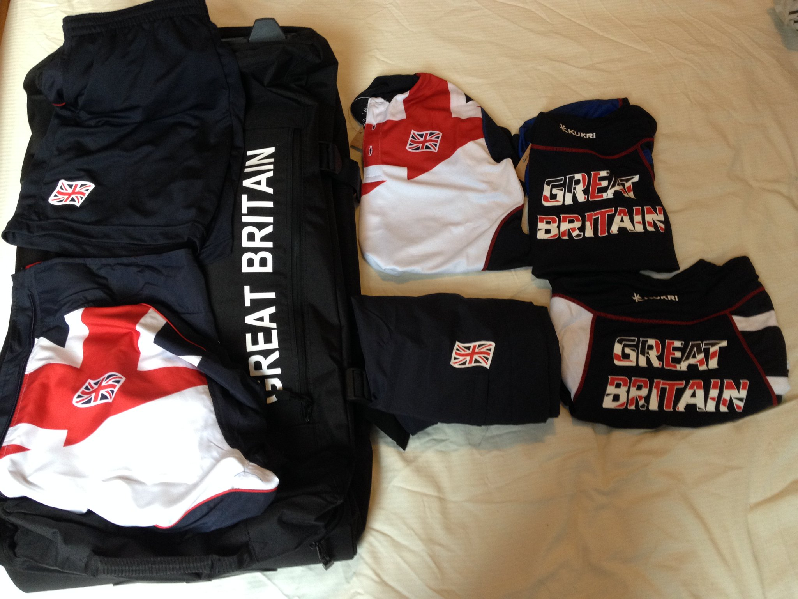
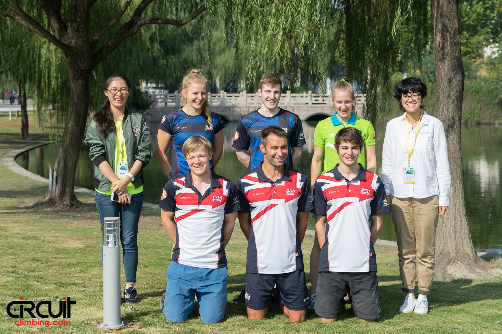
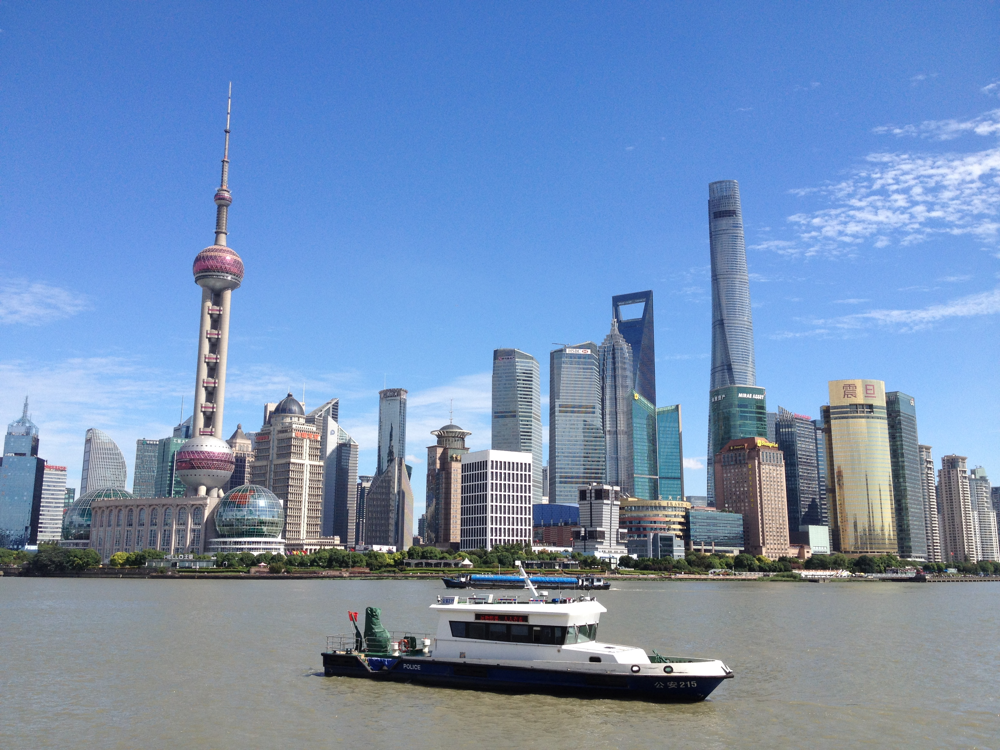
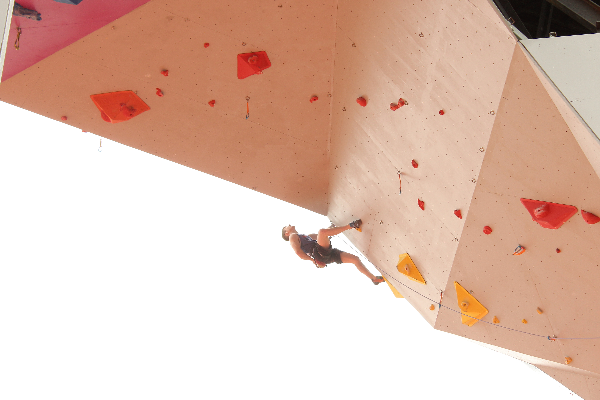
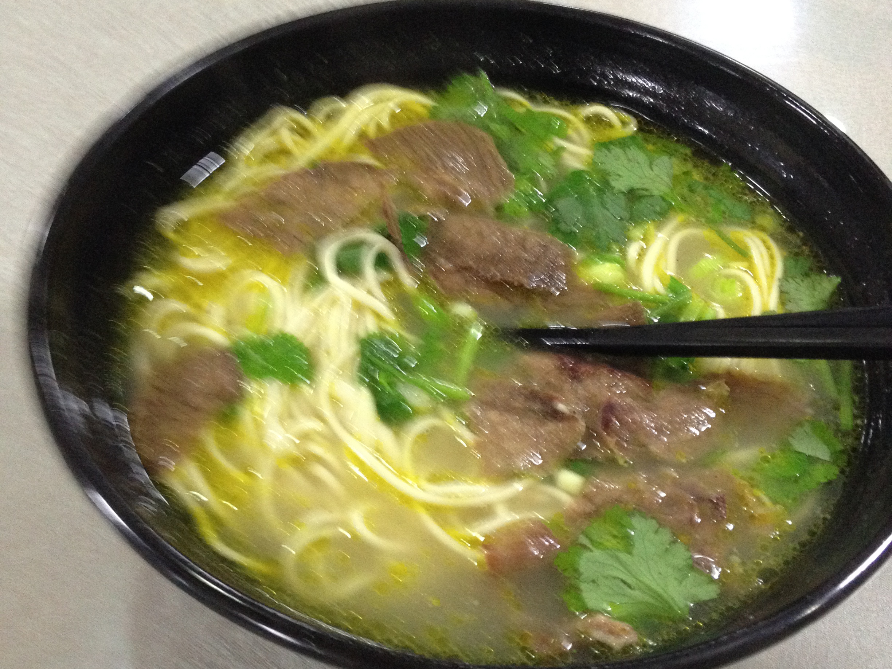
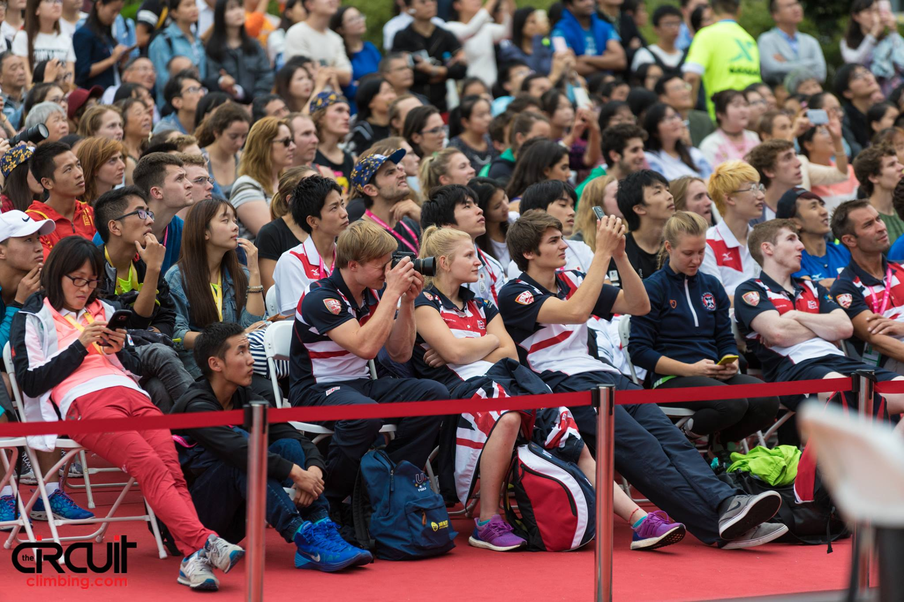
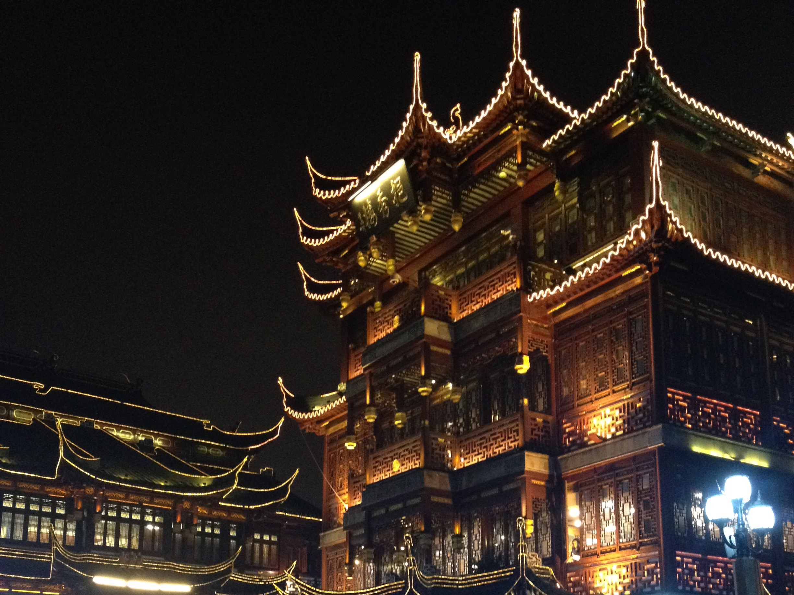

6th January 2017
China – World Universities Climbing Competition
Firstly a massive thank you to Sports Sheffield, for organising the funding and apologies for taking so long getting the blog out. I had decided to create a new website and felt the China blog would be a fantastic first blog. Hopefully you will enjoy the new website, there are a few bits I want to improve on.
The plan was hatched after the success of Sheffield University at the European Championships to put a GB team in for The Universities World Championships. With the help of Steve from Sheffield Sport, the BUCS organisation and the BMC a team was selected being Jen Wood, Luke Dawson, Billy Ridal, myself and team manager Steve from Sheffield Sport. There was a final rush sorting my visa as I needed my passport for Italy, (IFSC World Cup in Arco). We had decided the team would take part in the super combined event by everyone taking part in Speed, Boulder and Lead. BUCS supplied us with an awesome kit, which arrived a week before we were due to leave and the excitement was building.
Day 1
Our hearts sank when we got to customs in Shanghai, after 20 hours of travel customs was rammed, it looked like we would be a long time. However, we had travelled I our GB kit and we were spotted by officials who waved through without queuing! I was liking China already. After a short wait for another team we were bussed to our accommodation. Very smooth and efficient. Our accommodation was superb, I’m really liking China.
As our flight had landed at 7am we planned to work off the jet lag by touring the university campus where the comp was held. We were designated two volunteer 'minders' who helped show us around and watched us like hawks around the state owned campus. Their English was excellent and they were with us whenever we were on campus, and became part of our team cheering us on.
Day 2
Was a free day so we took a trip into Shanghai, travelling by commenter train for that authentic Chinese experience.
Shanghai was very impressive, modern vibrant city with a twist of a different culture.
Day 3
The Speed comp, and our first chance of seeing the wall. Pretty good looking wall, interestingly painted in gloss. The paint caused some surprises and problems as speed climbers are used to slightly more friction. A new PB for me on the speed wall, or should I say my first official time on a full official wall. The men's speed comp was dominated by Marcin Dzienski (Pol) and Stanislav Kokorin (Rus) currently ranked 1st and 2nd on the World Senior Circuit.
Day 4
Was a busy one, we fuelled up on a tasty breakfast of cakes and pastries instead of the more exotic rice porridge, then off for lead qualifiers followed by bouldering qualifiers.
Lead qualifiers – as usual I was first competitor to climber on one of the routes, and got a top, pretty good start to the day, the day went well with another double top. There were a few others qualify with double tops. By lunch time all GB had made it through to the lead semis.

Bouldering qualifiers – the format was all from isolation, I was a little nervous as I'm not the best at reading problems. I gave it my all; I was delighted to make semis. This was my first time I had ever bouldered under full international rules for qualifiers.

After hearing horror stories of Chinese food I was pleasantly surprised. We had been eating at the Uni where the quality of the food was excellent. Noodles were impressively made freshly in front of us. Chopsticks for noodle soup was a challenge though.
Day 5
First came the lead semis, I climbed like an idiot, I think the whole China thing had started to get to me. Even if I had climbed better making the finals would have been a tough feat. I just would have liked to have climbed better, putting the disappointment aside I focused on the bouldering semis.
The blocs in the bouldering final were really hard, but I was really psyched to be there.

Day 6 and 7 finals, and closing ceremony
Jen had made the females final for both events, so we all gave her support, it was really exciting to have a team member in the finals. I was really pleased to find I was 10th overall in the super combined event.
We took one final trip in to Shanghai for the evening.
Upon reflection I had set myself goals to make the semis in both Lead and Boulder which I achieved, and a PB on the speed wall. The quality of competitors was very high with the finals being full of highly ranked World Senior Climbers who regularly make finals and podiums on the world senior circuit. It had been a fantastic way to compete against some of the world’s best. I have come back full of enthusiasm and confidence on how to improve.
China had been a brilliant experience, the scale of Shanghai was insane, the people were very friendly, extremely helpful showing us round their country, which was immaculately clean. Thank you so much to all the people who made it possible, especially the sponsors. BUCS, Sports Sheffield, the University of Sheffield and Beyond Hope.
I was delighted to find out whilst I was out in China I have been awarded the ESPS grant for the third year. A massive thank you and I hope I can continue to do the award justice.